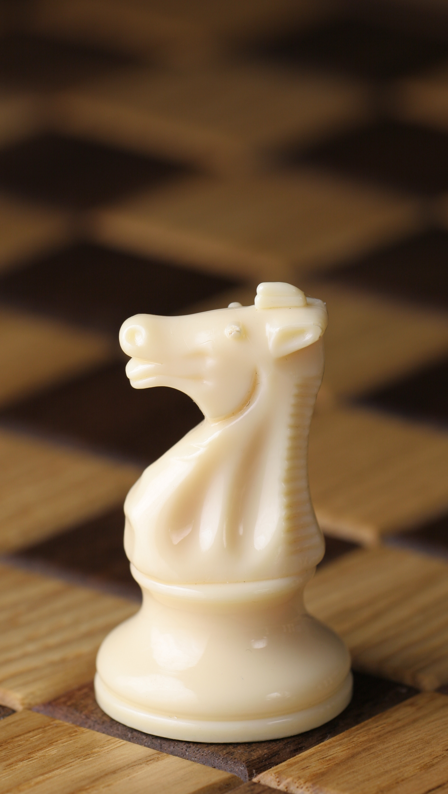

Lección 1: ¡Moviendo las piezas en el tablero!
En esta primera leccion del curso de "Jaque Mate Maestro!" vamos a aprender a cómo mover las piezas en el tablero de ajedrez. Prestá atención:
El Rey: El rey es el jefe, el que hay que proteger a toda costa. Se mueve una casilla en cualquier dirección. ¡Es lento pero importante!

La Reina: ¡La reina es la más poderosa! Se mueve en línea recta, tanto horizontal como verticalmente, o en diagonal.

Las Torres: Las torres se mueven en línea recta, ya sea horizontal o verticalmente. ¡Son fuertes y pueden controlar las columnas y filas!

Los Alfiles: Los alfiles se mueven en diagonal. Cada alfil se queda en su propio color de casillas. ¡Son rápidos y astutos!

Los Caballos: Los caballos son los saltarines del juego. Se mueven en forma de "L" y pueden saltar otras piezas. ¡Son impredecibles y geniales!

Los Peones: ¡Los peones son los guerreros de primera línea! Se mueven hacia adelante, pero solo una casilla al principio. Después pueden avanzar dos casillas desde su posición inicial. ¡Atentos, porque los peones también atacan en diagonal!